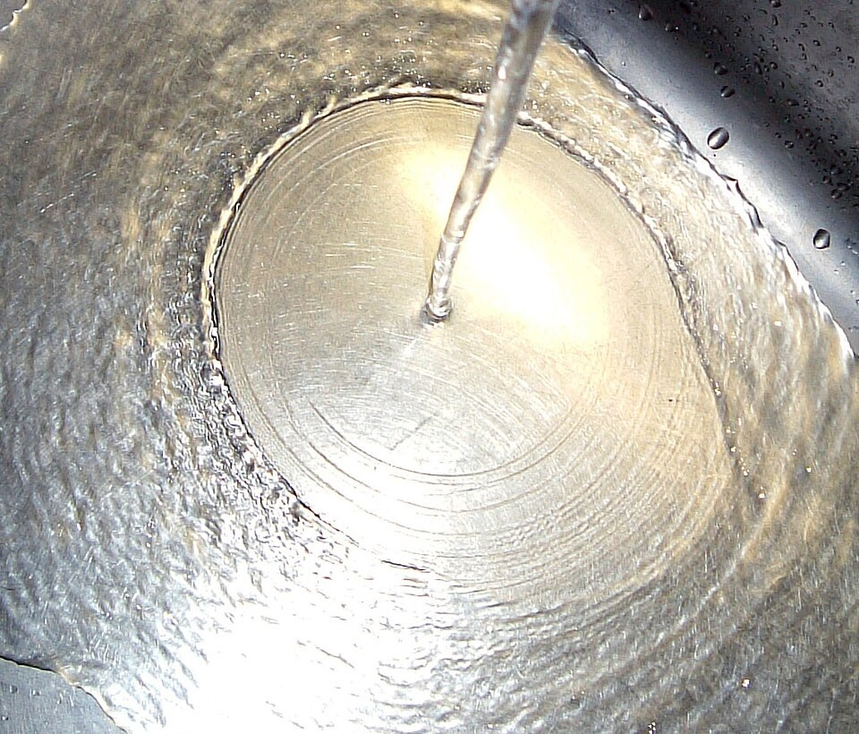

El salto brusco del agua que pasa de rápida a lenta
Abrí la canilla sobre una pileta plana y mirá el fondo: el chorro, al pegar, se desparrama en una capa de agua finita y rápida que corre hacia afuera. A unos centímetros, de golpe, el agua se vuelve más gruesa y más lenta, formando un anillo. Ese escalón brusco es un resalto hidráulico, y es el mismo fenómeno que aparece al pie de las represas y en los canales.

Según las clases de flujo en canales abiertos de Arturo León, de la Universidad Internacional de Florida, un resalto hidráulico ocurre cuando un flujo rápido, llamado supercrítico, se encuentra con un flujo lento, subcrítico [1]. Consiste en un cambio brusco de la altura del agua, con un rodillo de agua que gira hacia atrás en la mayor parte del resalto [1].
Lo que distingue un flujo rápido de uno lento es el número de Froude, que compara la velocidad del agua con la velocidad de las olas en aguas poco profundas, √(gy) [2]:
Si el agua corre más rápido que las olas que podrían viajar en ella, ninguna perturbación puede avanzar río arriba. Cuando ese flujo rápido tiene que pasar a ser lento, no puede hacerlo de manera suave: lo hace con un salto (un razonamiento a partir de la comparación con la velocidad de las olas, la misma idea del número de Mach).
El embotellamiento: en una autopista, si los autos que vienen rápido se encuentran de golpe con un embotellamiento, no van frenando de a poco: se amontonan en un frente bien definido. Del lado de atrás, autos rápidos y separados; del lado de adelante, autos lentos y apretados. El resalto hidráulico es ese frente: agua rápida y baja de un lado, lenta y alta del otro.
León explica que, como dentro del resalto hay un flujo muy complicado y se pierde mucha energía difícil de estimar, no se puede usar la ecuación de la energía: hay que usar la de la cantidad de movimiento [1]. Aplicada a un canal rectangular horizontal, da la ecuación de Bélanger, que relaciona las alturas de los dos lados del resalto [1]. Resolviendo esa ecuación junto con la conservación de la masa, la relación se puede escribir con el número de Froude del lado rápido (un cálculo propio a partir del planteo de León):
Con Fr1 = 3, por ejemplo, el agua sube a unas 3,8 veces su profundidad (un cálculo propio con la fórmula). Y en el salto se pierde energía: es la diferencia entre la energía de los dos lados [1]. Por eso los resaltos se provocan a propósito al pie de los vertederos de las represas: disipan la energía del agua que baja rápido antes de que erosione el lecho del río (un razonamiento a partir de la pérdida de energía).
León incluye un ejemplo de cocina: un chorro de una canilla que pega sobre una placa plana forma un resalto a unos 7,6 cm (3 pulgadas) del centro, donde la profundidad del agua pasa de 0,05 a 0,20 pulgadas, es decir de algo más de 1 mm a unos 5 mm [1]. Con esos datos, el problema pide calcular el caudal de la canilla [1]. En la pileta, el resalto es circular porque el agua se desparrama en todas direcciones desde el chorro.
Un resalto no tiene por qué estar quieto. León muestra que una onda que avanza río arriba, un frente de agua que se propaga, se puede analizar como un resalto: basta mirarla desde un observador que se mueve con ella, para el que el frente queda quieto [1]. Es la misma idea de los tsunamis que llegan a la costa como una pared de agua.
Una onda de choque de agua: el resalto hidráulico se parece mucho a una onda de choque en un gas: de un lado el flujo va más rápido que sus ondas y del otro más lento, y en el salto se pierde energía (un razonamiento a partir de la comparación entre el número de Froude y el de Mach).
El resalto hidráulico es el salto brusco con que un flujo rápido y poco profundo se convierte en uno lento y profundo. Lo gobierna el número de Froude, que compara la velocidad del agua con la de sus propias olas, y se calcula con la conservación de la cantidad de movimiento, porque en el salto se pierde energía. Se lo ve en la pileta de la cocina, al pie de las represas y en los frentes de agua que avanzan por los canales.
Pregunta para la comunidad: Si abrís más la canilla, ¿el anillo del resalto en la pileta se aleja o se acerca al chorro? Probalo y pensalo con el número de Froude: ¿qué le pasa a la velocidad y a la profundidad de la capa de agua?